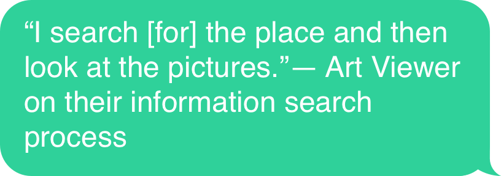
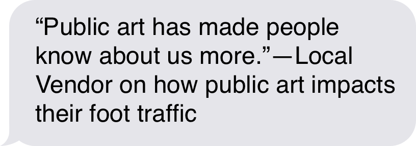
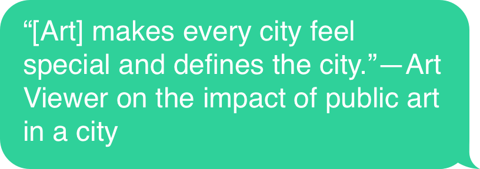
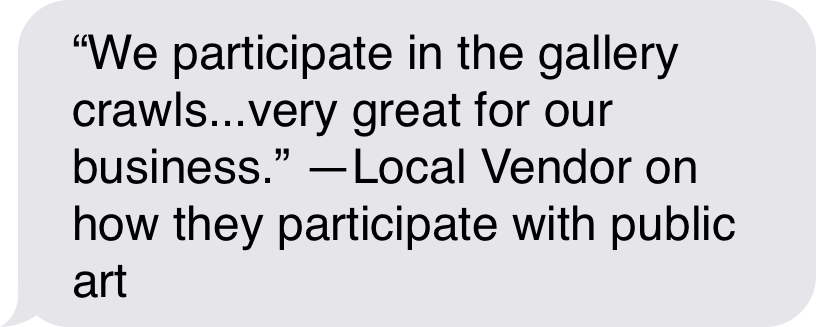
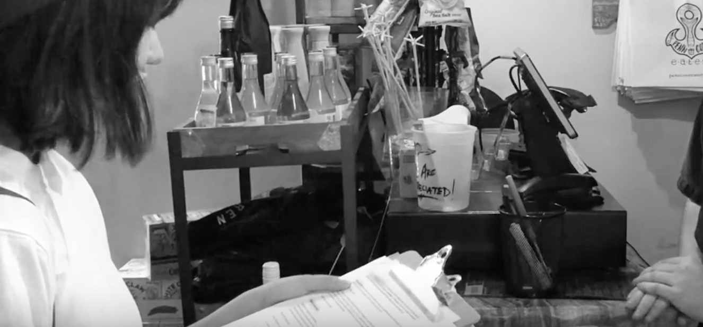
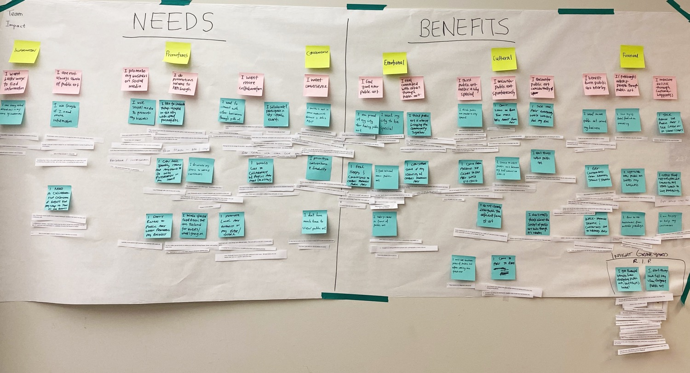
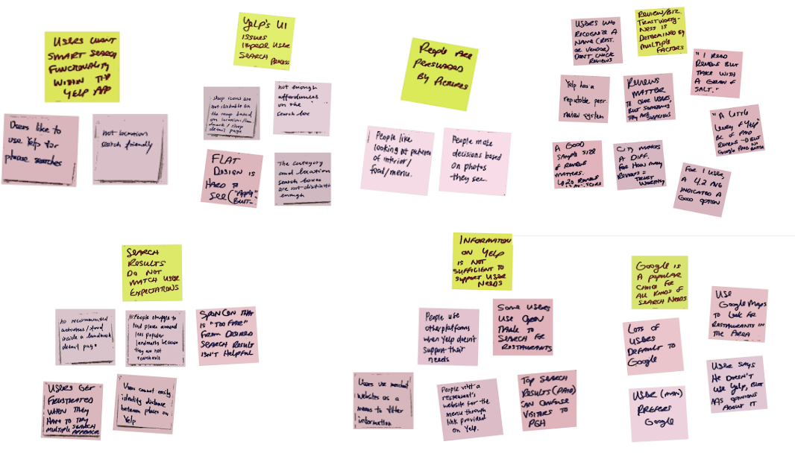
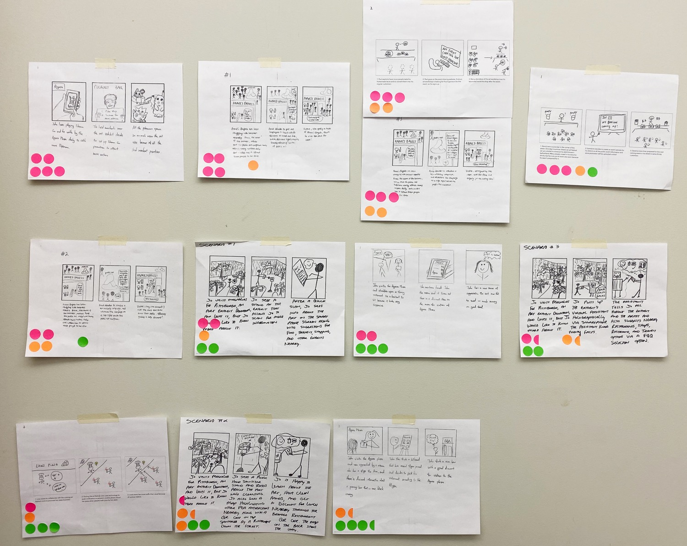
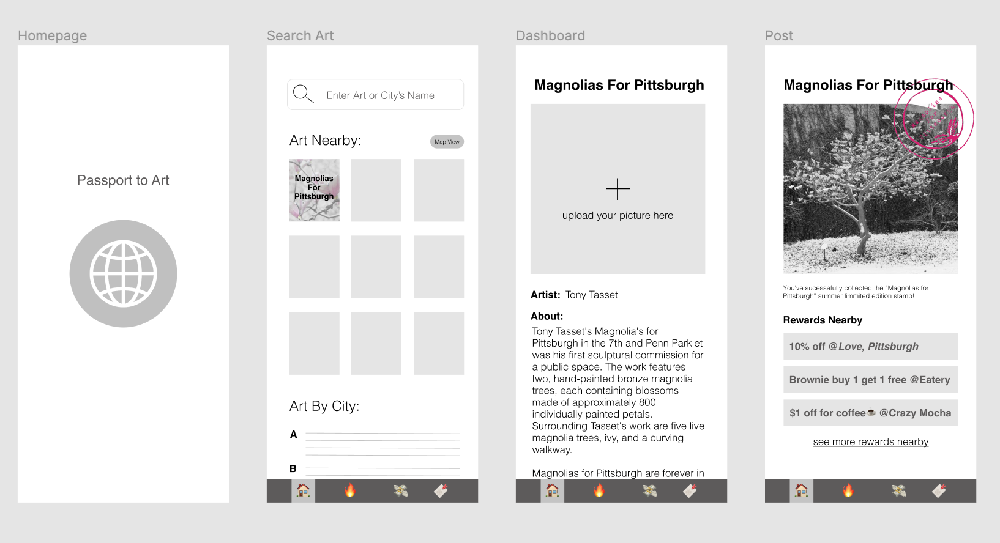
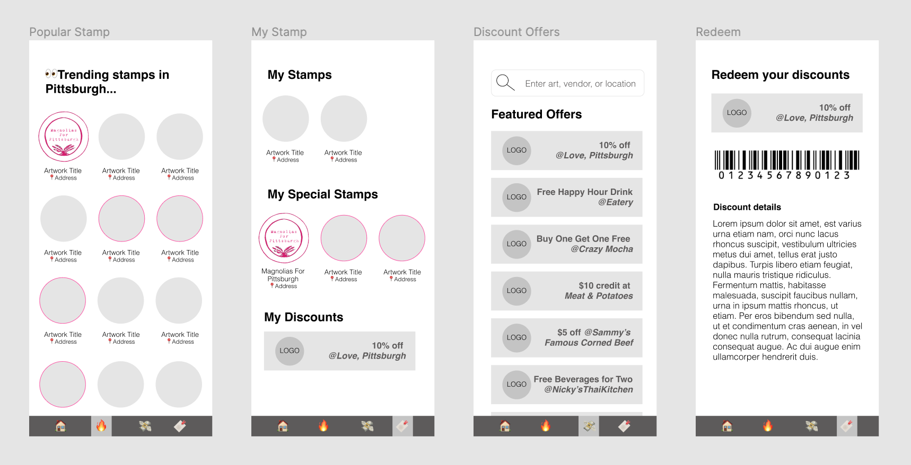

Art Passport:
How might we measure the impact of public art on local businesses and art viewers?
Course | User Centered Research and Evaluation
My Role | User Researcher and UX Designer
Team Members | Lauren Jablonski, Kyra Low, Roy Xu
Executive Summary
How might we measure the impact, if any, of public art on local businesses and art viewers? To get answers, our team conducted a series of interviews, contextual inquiries, think aloud, and usability tests to help us better understand the needs, pain points, and opportunities of art viewers and local merchants here in Pittsburgh.
Our research indicated that local vendors need a better way to attract customers and participate with local art exhibits, while viewers want interactive access to the art information they are interested in and easier ways to search for it. So we created the Art Passport App, a tool that showcases public art around the city, and gives people access to freebies and discounts from local vendors, and all users have to do is take a photo to collect your digital passport stamps when visiting an public art exhibit.
Problem
How might we measure the impact, if any, of public art on local businesses and art viewers?
Methods
Contextual Inquiries / Observe and Intercept / Think Aloud Protocol / Storyboard / Speed Date / Experience Prototype
Quotes from Research
   Major Insights
1. Public art increases nearby business traffic by attracting tourists and local customers who are in the area.
2. Interactive promotion opportunities lead to repeat customers; user enjoyment translates to positive rapport with vendors and their products.
3. Users look for visual content from businesses they consider.
4. Local events motivate and inspire business vendors to create Pittsburgh-themed and art-related products, drinks, and food.
Contextual Inquiries + Observe and Intercept
Contextual inquiries of three vendors revealed user needs related to exhibit information and customer traffic. We observed and intercepted two viewers to find out why and how they interact with public art.
Insights
1. Business vendors near public art would like to collaborate more with art events and with each other.
2. Public art increases nearby business traffic by attracting tourists and local customers who are in the area.
3. Artistic events in the area motivate and inspire business vendors to tailor products, drinks, and food to be Pittsburgh-themed or art-related. Ex: pink cocktails on offer when Mean Girls comes to town.
4. Vendors would like a tool such as a collaborative calendar to help keep track of opportunities for cross-promotion, such as the annual gallery crawl.
Affinity Diagram based on interviews:
Think Aloud Protocol
We conducted 5 Think-Aloud protocol session with art viewers on Yelp. Our main goal is to find out how technology helps users navigate the process of finding information related to public art and the businesses in its vicinity.
Insights
1. Users look at business reviews before making decisions
2. Users look for visual content for businesses they consider
3. Incorrectly targeted ads can hurt business more than help
4. Users are searching by phrases for desired info and searching in relation to landmarks
5. Ad efforts should be tailored to search platforms (i.e Google v.s Yelp)
We made an affinity cluster based on our observations:
Storyboading
we created four sets of storyboards showcasing potentially viable solutions and tested them with five participants, including three business stakeholders and two customer stakeholders:
1. Increase walk-in traffic
2. Access information about local events within the community via a single platform
3. Attract users via restaurant discounts based on public art experiences
4. Share information about nearby public art and promote the business through informational channels
We created 3 storyboards for each solution:
- one scenario is the "safe" way to meet the user's need
- the second scenario is progressively riskier
- the third scenario should be intentionally "out there" and intended to make the user uncomfortable and test their boundaries.
Speed Dating
We speed date with two business vendors and two art viewers with our storyboards, and mark their reactions(positive, neutral, ) with stickers.
Key Insights:
- Users don’t like being approached by others. They want engagement to be voluntary.
- The idea of “capitalizing” on public art to drive business growth is distasteful.
- Interactive promotions are a good idea because they make customers think a business and its staff are “nice” which leads to repeat customers.
- Pictures can be more persuasive than reviews when users don’t want to read text-based content.
Experience Prototype
For our first app prototype, we decided to produce a series of event calendar applications that aim to help users easily find information about ongoing events near public art exhibits as well as the exhibits themselves.
Further, we wanted to incorporate local merchant discounts and promotions into our applications so that users would be incentivized to not only visit public art exhibits, but also nearby vendors.
Some of the features that we wanted to have in the app include:
- An event calendar
- A search bar for specific events/art exhibits
- Filters for geolocation, interest, and event type
- Push notifications
- Vendor pages with applicable discounts
As a result, we revised our prototype to focus more on interactivity and novelty, two popular trends gleaned from our speed dating results. We moved away from the events calendar focus and towards a digital art passport instead. Speed dating showed us that users enjoyed a playful approach to information discoverability, while also wanting the benefit of social sharing and access to vendor discounts.
Solution
We created an art passport prototype that would allow nearby vendors to feature discounts and free samples on the app as rewards to users for getting a “stamp” in their passport while visiting public art.

Users would get the benefit of discoverability via trending stamps and rewards, and interactivity via taking a photo of the exhibit with the ability to share it on social media along with their earned custom stamp. Their profile would save their existing stamps along with “special stamps” that can be collected during different seasons or for temporary exhibits. Our hope is that this limited edition stamp feature could become a status symbol users would want to share.
Once a user takes a picture to earn their stamp, they have access to local rewards featured on the exhibit’s screen. The user is able to redeem these rewards from their profile in real time or in the future. Users are able to search by phrase for art, restaurants, and shops they might be interested in if not featured on the trending stamp screen or on the trending discount screen.